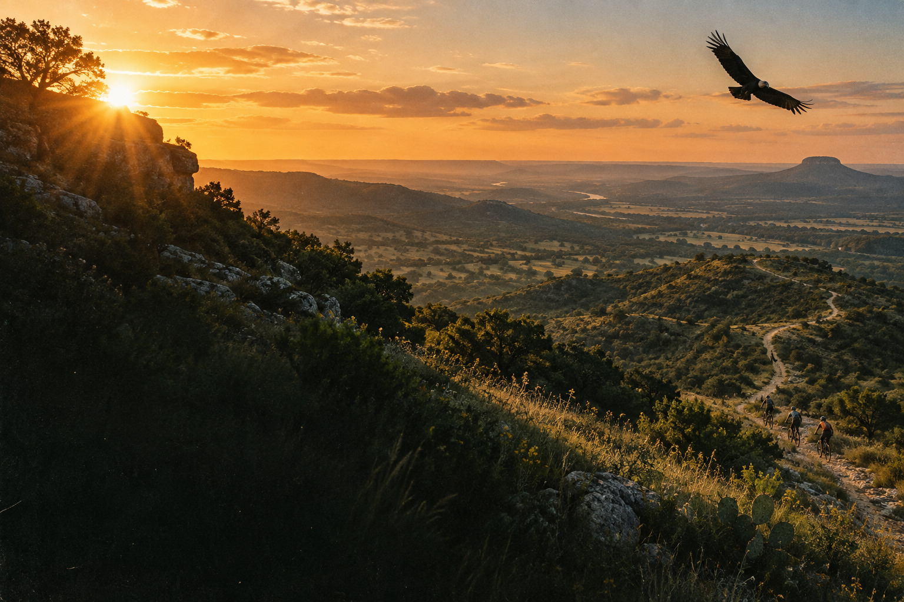
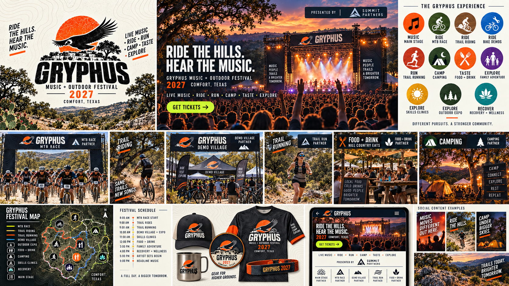
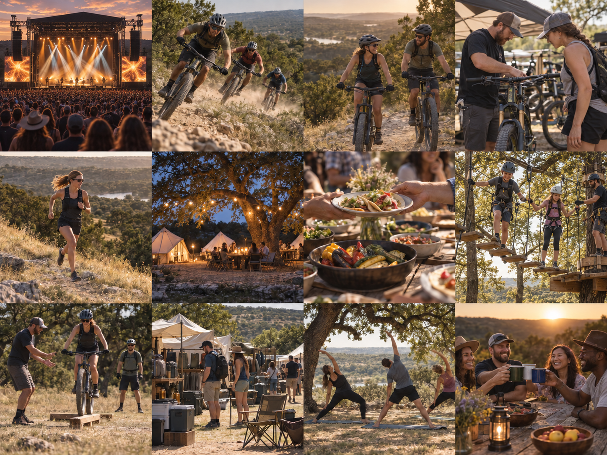
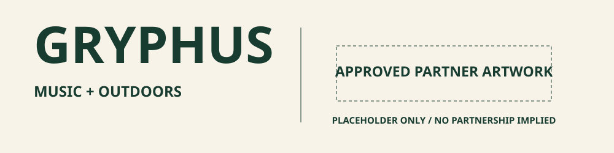
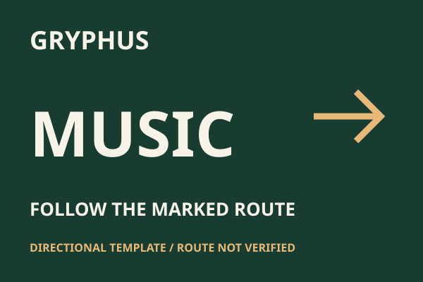
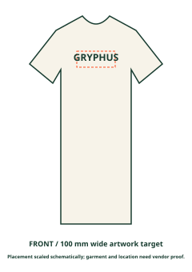
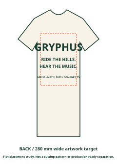

Make it clear
Barlow Condensed Black. Minimum width: 84 px digital, 25 mm print; embroidery at least 70 mm pending stitch proof. Clear space: 0.5H each side.

GRYPHUS / 2027
A field guide for partners, makers
and good company.

Cale’s original board. Sponsor lockup, stage and schedule are concepts.
Outdoor community.
Music at its heart.
A useful, human welcome.
Keep the bird and sun, warm paper, strong type and sense of terrain. Make space for real people and all eleven proposed pursuits.
Vultur gryphus is the Andean condor. A classical griffin association also exists; the founders’ intended story remains theirs to tell.
Use the wordmark until an approved bird master is supplied. REI informed the outdoor brief; it is not an affiliation.
Forest, cream and orange. A wide landscape and practical outdoor clarity.
Explore this direction ↗Cream, charcoal and orange. Giant type and a graphic divided poster.
Explore this direction ↗Warm brown, canvas and gold. Georgia headlines and a personal invitation.
Explore this direction ↗Choose one direction per campaign. Keep the shared wordmark, event facts and accessibility rules.
Barlow Condensed Black. Minimum width: 84 px digital, 25 mm print; embroidery at least 70 mm pending stitch proof. Clear space: 0.5H each side.
Never squeeze, stretch, outline or bevel the wordmark. SVG files contain editable text, not outlined paths. Install Barlow; outline a copy after approval. The bird master is pending.
#183C30
RGB 24 / 60 / 48
CMYK approx. 60 / 0 / 20 / 76
#F7F3E9
RGB 247 / 243 / 233
CMYK approx. 0 / 2 / 6 / 3
#FF5125
RGB 255 / 81 / 37
CMYK approx. 0 / 68 / 85 / 0
#222D24
RGB 34 / 45 / 36
CMYK approx. 24 / 0 / 20 / 82
#F3F1E9
RGB 243 / 241 / 233
CMYK approx. 0 / 1 / 4 / 5
#FD562C
RGB 253 / 86 / 44
CMYK approx. 0 / 66 / 83 / 1
#452F25
RGB 69 / 47 / 37
CMYK approx. 0 / 32 / 46 / 73
#F7F0E2
RGB 247 / 240 / 226
CMYK approx. 0 / 3 / 9 / 3
#E6B978
RGB 230 / 185 / 120
CMYK approx. 0 / 20 / 48 / 10
Start at 60% neutral, 30% dark and 10% accent. CMYK values are unprofiled starting points. Proof on actual paper, fabric and ink. No Pantone match is claimed.
BARLOW CONDENSED BLACK / WORDMARK + DISPLAY
come out. stay awhile.
GEORGIA / BASECAMP EDITORIAL ONLY
The music you came for. The people you meet. A weekend with room for both.
SWITZER / BODY + UI
| Role | Desktop | Mobile |
|---|---|---|
| Hero | 96–128 px | 56–72 px |
| Section | 64–88 px | 40–56 px |
| Body | 18 / 1.6 | 16–18 / 1.6 |
| Label | 12 / 1.5 | 11–12 / 1.5 |
Barlow OFL is included. Obtain Switzer directly from Fontshare. Georgia requires a licensed installation. Preserve 45–75 characters per paragraph line; do not artificially condense type.
Show an intended atmosphere. Do not claim the art photographs an actual venue, booked artist, attendee or confirmed activity.

Preserve identities and year. Photographer attribution is unverified. Reconfirm use before reproducing personal images on merchandise.
Crop with care. Keep safety equipment visible. Never fabricate attendance, add endorsements or guess faces.

PROPOSED EXPERIENCES / CAMPAIGN CONTACT SHEET
Music. Movement.
Time together.
Music, race, riding, demos, running, camp, food + drink, family, clinics, expo and recovery.
Desktop: 12 columns, 24 px gutters, 64 px margins.
Mobile: 4 columns, 16 px gutters, 20 px margins.
Spacing: 4 / 8 / 12 / 16 / 24 / 32 / 48 / 64 / 96 px.
Icons: 24 px grid, 2 px strokes, simple open shapes, text labels. Controls get 44 × 44 px targets, visible focus and useful descriptions.
Normal text ≥4.5:1; large text ≥3:1; essential controls ≥3:1. Measure the final image crop. Do not rely on color alone.
Motion: 180 ms controls, 260 ms panels, up to 500 ms entrances. Honor reduced motion. Sound begins only by explicit action, with pause and low initial volume. Stop when hidden.
Ride the hills.
Hear the music.
April 30–May 2, 2027
Flat Rock Ranch, Comfort, Texas
“Explore the proposed 2027 experiences.”
“2027 lineup and ticket details are still to come.”
Confirmed: dates, place, Cale’s producer role and Walt’s curator role. Proposed: program, commercial terms, sponsors, capacity and timed sessions.
April 29 is a separate San Antonio gathering. Personal travel dates do not belong on festival collateral.


600 × 400 mm / DIRECTION MUST BE VERIFIED ON SITE
Separate partner artwork from editorial content. Align partners by optical height; start at a maximum 0.7 × Gryphus cap height and honor their clear-space requirements.
Presenting-tier treatment needs specific organizer approval. Never invent a sponsor relationship.
One destination and one clear arrow. Begin with 80 mm cap height for distance reading; test on site. Confirm fixing, material, weather and accessibility with the venue/vendor.
The Summit Partners lockup in the original board is a concept. No sponsor is confirmed by this guide.


CAP / 90 × 40 mm
PATCH / 75 × 50 mm
Use one or two inks/thread colors. Wordmark first. Keep patch art 5 mm inside the edge. Avoid the cap center seam; confirm the stitch area with the vendor.
Flat placement diagrams are not product photographs, patterns or final separations. Confirm garment, scale and placement. Approve a strike-off or stitch sample before production.
READY FOR THE TRAIL. EASY IN TOWN.
An outdoors-first collection in deep forest, natural cotton and warm orange. Understated from the front; a generous bird-and-sun story on the back.
Forest chest wordmark and natural back-print tee. Start with a 100 mm chest mark and 280 mm back artwork; one or two screen-print inks.
Five-panel trail-cap silhouette with a restrained front emblem. Proposed woven or embroidered patch; keep the bird detail readable at actual size.
Cream enamel-style mug with forest rim and orange accent. Explore a limited-color wrap; confirm the supplier's printable area.
Direction: cotton jersey, lightweight woven cap, enamel-style drinkware. Fiber, weight, finish and sourcing are to be selected with the vendor.
Choose Field Kit for Cale’s review ↗GENERATED MERCHANDISE VISION. NO ORDER, PRICE OR MANUFACTURER IMPLIED. EMBLEM REPRODUCTION NEEDS AN APPROVED MASTER.
THE POSTER BECOMES SOMETHING YOU WEAR.
A high-contrast collection in charcoal and signal orange. The wordmark does the work: large, confident and visible across a crowd.
Charcoal tee with oversized orange GRYPHUS across the chest. Start at 280 mm wide; preserve letter shape. Any distress is a surface treatment, never the master logo.
Black trail-cap silhouette with a small orange wordmark; orange patch with a simplified dark emblem. One or two thread colors, vendor proof required.
Orange enamel-style mug, dark print and rim. Match the perceived orange across fabric, thread and coating through physical samples.
Direction: substantial cotton jersey, structured dark cap, enamel-style drinkware. No specific manufacturer or cost is implied.
Choose High Ground for Cale’s review ↗GENERATED MERCHANDISE VISION. NO ORDER, PRICE OR MANUFACTURER IMPLIED. EMBLEM REPRODUCTION NEEDS AN APPROVED MASTER.
THE ONE YOU KEEP REACHING FOR.
Warm canvas, sand corduroy and rust accents. A quieter collection that feels personal, lived-in and right around a shared table.
Ivory tee with a small left-chest emblem. Begin near 90 mm wide; simplify the final mark for reproduction without redrawing the bird.
Sand corduroy-cap direction with earth-colored wordmark embroidery. Canvas patch with a rust border; leave 5 mm for edge finishing.
Cream enamel-style mug with rust rim and handle. A small emblem keeps the surface open; confirm finish, wash care and decoration area.
Direction: soft cotton jersey, corduroy texture, cream enamel-style drinkware. Material names describe the vision, not selected SKUs.
Choose Camp Club for Cale’s review ↗GENERATED MERCHANDISE VISION. NO ORDER, PRICE OR MANUFACTURER IMPLIED. EMBLEM REPRODUCTION NEEDS AN APPROVED MASTER.
Printable PDF, this HTML guide, six editable SVG wordmarks, exact digital colors, approximate CMYK, flat signage/merch/partner templates, Barlow with OFL, font notes and checksums.
Choose a direction. Obtain the approved bird master. Confirm use-specific imagery, materials, sizes, color profiles and finishing. Keep editable files; outline a copy for final production. Approve vendor proofs and quantities separately.
Barlow Condensed: The Barlow Project Authors, SIL OFL 1.1; included with license. Switzer: Indian Type Foundry / Fontshare, ITF Free Font License; each vendor should obtain the original package directly. Georgia: Microsoft, proprietary; use an appropriately licensed local installation. Switzer and Georgia source font binaries are not redistributed in this kit. PDF contains embedded subsets; HTML uses the site font or its Arial fallback offline.